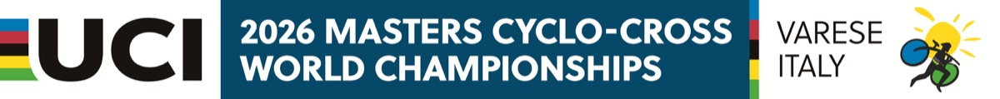

La Soc. Binda, che organizza questo mondiale di cyclo-cross, è nata nel 1929: quasi cento (!) anni fa.
Prende il nome da Alfredo Binda, grande ciclista varesino del secolo scorso.

La Soc. Binda, che organizza questo mondiale di cyclo-cross, è nata nel 1929: quasi cento (!) anni fa.
Prende il nome da Alfredo Binda, grande ciclista varesino del secolo scorso.
Soc. Binda, the club organising this cyclo-cross world championship, was founded in 1929: almost a hundred (!) years ago.
It is named after Alfredo Binda, a great cyclist from Varese in the last century.
Secondo te, quante volte ha vinto il mondiale?How many times do you think he won the World Championship?
3 volte: nel 1927 al Nürburgring, nel 1930 a Liegi e nel 1932 a Roma.3 times: in 1927 at the Nürburgring, in 1930 in Liège and in 1932 in Rome.
Quante volte ha vinto il Giro d'Italia?How many times did he win the Giro d'Italia?
5 volte: nel 1925, 1927, 1928, 1929 e 1933. È il record assoluto, condiviso con Fausto Coppi ed Eddy Merckx.5 times: in 1925, 1927, 1928, 1929 and 1933. That's the all-time record, shared with Fausto Coppi and Eddy Merckx.
Complimenti! Ecco dove si trova il prossimo QR code:Well done! Here's where to find the next QR code:
[Indizio 1 → 2]